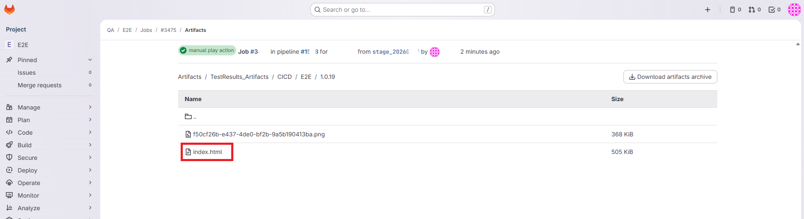
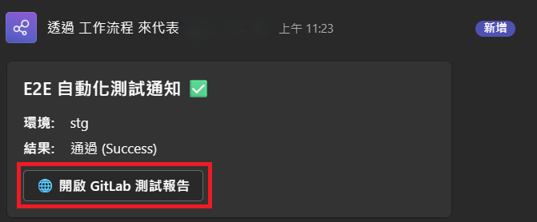
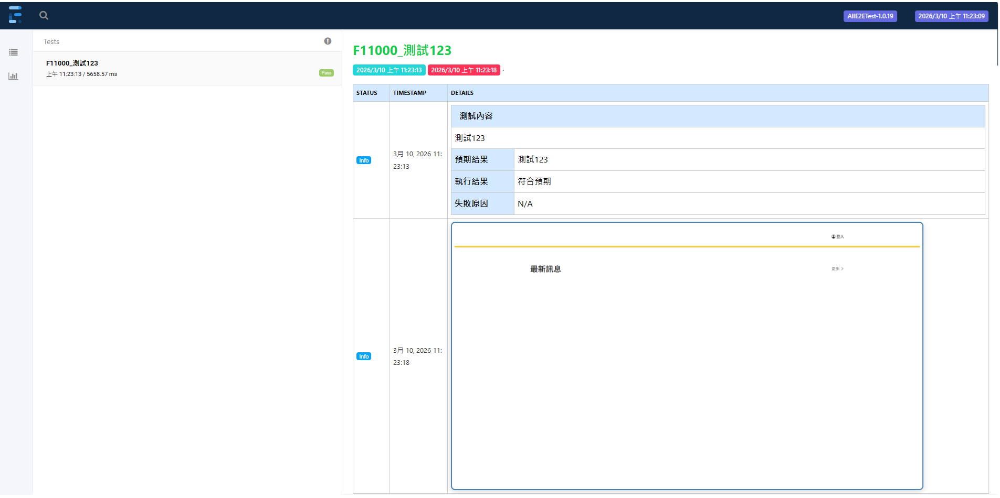

專案背景 (Situation)
為了解決手動觸發測試與人工回報結果的耗時問題，我建立了自動化測試與 CI/CD 流水的深度整合：
- 即時性不足： 測試結果無法即時通知開發人員，導致錯誤修復週期過長。
- 報表檢視不便： 傳統測試報表需額外下載附件且無法快速定位截圖。
自動化流程架構 (Workflow)
Commit & Push
➔
GitLab Pipeline
➔
Automation Test
➔
Teams Notification
核心行動 (Action)
- GitLab Pipeline 自動化： 撰寫
.gitlab-ci.yml，實現從程式碼推送後自動觸發測試環境部署與腳本執行。
- MS Teams 通知整合： 透過 Webhook 實作即時通知，將執行狀態、失敗摘要與 Artifacts 連結推播至團隊頻道。
- HTML 報表優化： 使用 PowerShell 處理測試截圖，並將其轉為 Base64 編碼 直接內嵌於 HTML 報表，確保網頁開啟即可檢視證據。
- 環境維護自動化： 實作清理腳本，自動移除測試後產生的暫存檔與日誌，確保 Runner 執行空間不被佔用。
實作成果展示 (Implementation Highlights)

圖一：GitLab CI/CD Pipeline 自動執行流程

圖二：MS Teams 即時測試結果反饋通知

圖三：測試報告(敏感資訊已去識別化處理)